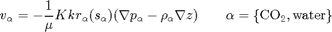
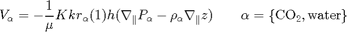
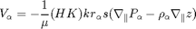
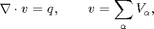
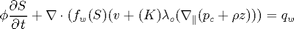
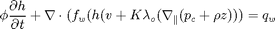
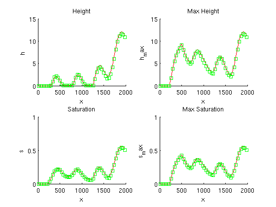
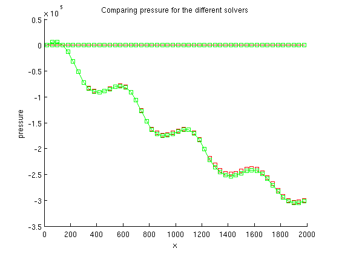
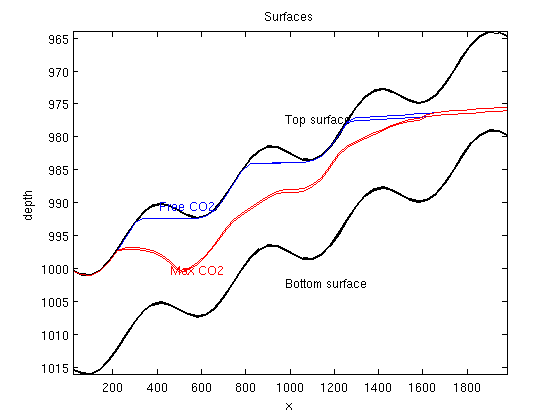
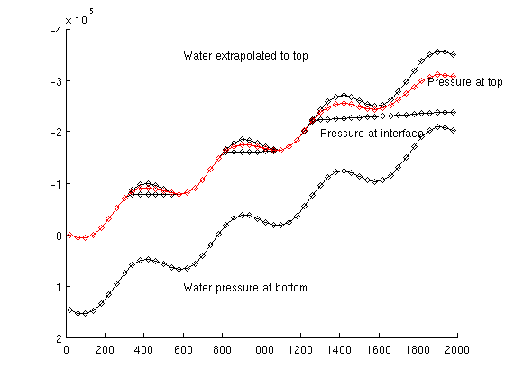

Contents
- Vertical average formulations
- Example to test vertical average caculation using different formulsation
- Parameters for the simulation
- Create the deck struct
- Convert to SI
- Instansiate grid and rock
- Define wells, boundary conditions and source terms
- Define system solvers
- H formulation based solver
- S formulation based solver
- Initial solutions
- Run the transport simulation.
- Output calculation time
- the state is now almost stationary we add the analytic calculation of the pressure
%%%%%%%%%%%%%%%%%%%%%%%%%%%%%%%%%%%%%%%%%%%%%%%%%%%%%%%%%%%%%%%%%%%%%%%%%%%
Vertical average formulations
Here, we we study the use of different formultions for the vertical equlibrium approximations to the twophase flow in reservoirs.
We start with the darcy laws verions of the darcy laws

The upscaled version of this using the assumption of vertical equlibrium sharp interface, constant permeability and porosity

Reformulated to using s as variable we can write

Ass usual the pressure equation fro incompressible flow is obtaind by $
where v is the Darcy velocity (total velocity) and lambda_t is the total mobility, which depends on the water saturation S.
The transport equation (conservation of the CO2 phase) in its simplest form:

and

Example to test vertical average caculation using different formulsation
The test case uses two wells at the start We compare to simulations
1) formulation using h as variable and mimetic for pressure and
explicit time stepping. This was the original formulation in the
vertical average module. 2) Using s as variable and using tpfa an implicit transport from the
mrst core.The example also set up a compate deck file which can be written and may be used for simulation by tradition solvers
%%%%%%%%%%%%%%%%%%%%%%%%%%%%%%%%%%%%%%%%%%%%%%%%%%%%%%%%%%%%%%%%%%%%%%%%%%% gravity on require deckformat gridtools
Parameters for the simulation
n = 50; L = 2000; % Cells in the vertical direction dim3 = 1; % Physical height of reservoir H = 15; % Physical idth of slice along the y axis dy = 1000; % Simulation time total_time = 100*year; % Timsteps nsteps = 20; % Uniform time stepping dt = total_time / nsteps; % Injection time injection_time=total_time/10; perm = 100; K = perm*milli*darcy(); phi = 0.1; % Initial depth depth = 1000; % Initial pressure p_press = 200; rate=(H*phi*L*dy)*0.2*day/injection_time; % refine most near top in z theta = -1*pi/180;
Create the deck struct
deck = sinusDeck([n 1 dim3], nsteps, dt, L, dy, H, theta, depth, phi, perm, rate, p_press);
Convert to SI
deck = convertDeckUnits(deck);
Instansiate grid and rock
make grid
G = initEclipseGrid(deck); G = computeGeometry(G); % make top surface grid G_top = topSurfaceGrid(G); G_top.cells.H = H*ones(G_top.cells.num,1); G_top.columns.dz = ones(numel(G_top.columns.cells),1)*H/dim3; G_top.columns.z = cumulativeHeight(G_top); % get permeability rock = initEclipseRock(deck); rock2d = averageRock(rock, G_top); Gt_c = G_top.cells.centroids;
Define wells, boundary conditions and source terms
% Empty boundary conditions [bc_s, bc_h] = deal([]); % Empty sources [src_s, src_h] = deal([]); for i=1:numel(src_h) src_h.sat = nan; src_h.h = G_top.cells.H(src_s.cell); end % Create wells. % Note that the deck is one cell thick to make indices which correspond to % the top surface grid. % Extract arbitrarily the first set of wells W_3D = processWells(G, rock, deck.SCHEDULE.control(1)); W_3D_2ph = W_3D; % change resv to rate which is used in the 2ph simulations for i=1:numel(W_3D) if(strcmp(W_3D(i).type,'resv')) W_3D_2ph(i).type='rate'; end % well indices is correct since they are calculated in 3D which % include the hight in the WI end % Convert VE wells for s and h formulation % We will use mimetic for the h formulation with ip_simple innerproduct W_h = convertwellsVE(W_3D_2ph, G, G_top, rock2d,'ip_simple'); % We will use tpfa method for the s formulation W_s = convertwellsVE(W_3D_2ph, G, G_top, rock2d,'ip_tpf'); % Correct the definition of input value according to solver. This is done % because we are using the schedule primarily meant for black oil solvers % with the VE two phase only solvers. for i=1:numel(W_h) % Inject CO2. W_s(i).compi=[1 0]; W_h(i).compi=nan; W_h(i).h = G_top.cells.H(W_h(i).cells); end
Define system solvers
% Create a cell array to hold helper variables and function handles for % each solver. problem = cell(2,1); mu = [deck.PROPS.PVDO{1}(1,3), deck.PROPS.PVTW(1,4)]; rho = deck.PROPS.DENSITY(1:2); sr = 0.3; sw = 0.3;
H formulation based solver
tmp.fluid = initVEFluidHForm(G_top, 'mu', mu, ... 'rho', rho,... 'sr', sr, ... 'sw', sw); % Initial reservoir state tmp.sol = initResSol(G_top, 0); % Precompute inner products S = computeMimeticIPVE(G_top,rock2d,'Innerproduct','ip_simple'); % Set up wells, boundary conditions and source terms tmp.W = W_h; tmp.bc = bc_h; tmp.src = src_h; % Define pressure solver with common interface tmp.psolver = @(sol,fluid,W,bc, src) solveIncompFlowVE(sol, G_top, S, rock2d, fluid, ... 'wells', W, 'bc', bc, 'src', src); % Define a pressure solver tmp.tsolver =@(sol,fluid,dt,W,bc, src) explicitTransportVE(sol, G_top, dt, rock, fluid, ... 'computeDt', true, 'intVert_poro', false,'intVert',false,'wells',W,'bc',bc, 'src', src); % As this solver solves for height of CO2 plume, it is not neccessary to % compute h from saturation values. tmp.compute_h=false; % ...but we have to find the saturation. tmp.compute_sat=true; % Plot height in red. tmp.col='r'; tmp.name = 'H formulation using explicit transport and mimetic discretization'; % We put the problems in a cell array to make the general structure for the % different solvers obvious. problem{1} = tmp; clear tmp
S formulation based solver
n=2; tmp.fluid = initSimpleVEFluid_s('mu' , mu ,... 'rho', rho, ... 'height' , G_top.cells.H,... 'sr', [sr, sw]); tmp.sol = initResSolVE_s(G_top, 0, [1 0]); % Notice the function handle tmp.sol.twophaseJacobian % Which points to the Jacobian System defining the VE formulation which is % a slight extention of the origian Jacobian system twophaseJacobian used % in MRST. % TPFA solver, we need transmissibilities cellno = gridCellNo(G_top); % Calculate Transmissibility for the 2D top surface grid. % Depending on the definition of area and length in the topsurface grid % this may or may not treat length along the surface. T = computeTrans(G_top,rock2d); T = T.*G_top.cells.H(cellno); tmp.bc = bc_s; tmp.src = src_s; % Two point flux approximation as pressure solver tmp.psolver = @(sol,fluid, W, bc, src) incompTPFA(sol, G_top, T, fluid, ... 'wells', W, 'bc', bc, 'src', src); tmp.W = W_s; % Define implicit transport as the transport method tmp.tsolver = @(sol,fluid,dt,W,bc, src) implicitTransport(sol, G_top, dt, rock2d, fluid, ... 'wells', W, 'bc', bc, 'src', src); % One need to calculate h separatly since the solver does not tmp.compute_h = true; tmp.compute_sat = false; tmp.col = 'gs'; % Note that the grid is modified with an extra field, G_top.grav_pressure % which defines a function handle to how to calculate the gravity % contribution. This is the part which is VE spesific. tmp.name = 'S formulation using implicit transport and two point flux'; problem{2} = tmp; clear tmp;
ans =
@twophaseJacobianWithVE_s
ans =
@(g,omega)gravPressureVE_s(g,omega)
Initial solutions
for kk=1:numel(problem) s0 = deck.SOLUTION.SOIL; h0 = deck.SOLUTION.SOIL.*G_top.cells.H; problem{kk}.sol.s = s0; problem{kk}.sol.h = h0; problem{kk}.sol.extSat = [s0, s0]; problem{kk}.sol.h_max = h0; % Time pressure and transport solve problem{kk}.p_time=0; problem{kk}.t_time=0; end
Run the transport simulation.
fig1 = figure(1); fig2 = figure(2); fig3 = figure(3); t = 0; while t < total_time set(0, 'CurrentFigure', fig1);clf set(0, 'CurrentFigure', fig2);clf set(0, 'CurrentFigure', fig3);clf set(gca,'YDir','reverse') for kk=1:numel(problem) tmp = problem{kk}; free_volume = sum(tmp.sol.s.*rock2d.poro.*G_top.cells.volumes.*G_top.cells.H); disp(['Total volume free ',num2str(kk),' ', num2str(free_volume/1e6)]); if(t<injection_time) W = tmp.W; bc = tmp.bc; src = tmp.src; else W = []; bc = []; src = []; end % Solve the pressure timer = tic; tmp.sol = tmp.psolver(tmp.sol, tmp.fluid, W, bc, src); tmp.p_time = tmp.p_time + toc(timer); % Using the computed fluxes, solve the transport timer = tic; nn=1; for ii=1:nn if(t>injection_time) % uncomment to forcing zero total flow %tmp.sol.flux(:) = 0; end tmp.sol = tmp.tsolver(tmp.sol,tmp.fluid,dt/nn,W,bc, src); end tmp.t_time =tmp.t_time + toc(timer ); if(tmp.compute_h) % Compute h if this problem needs it [h, h_max] = tmp.fluid.sat2height(tmp.sol); tmp.sol.h = h; tmp.sol.h_max = h_max; % set the value s_max for convenience tmp.sol.s_max = tmp.sol.extSat(:,2); end if(tmp.compute_sat) % if the solver do not compute s, s_max calculate it tmp.sol.s = (tmp.sol.h*(1-sw) + (tmp.sol.h_max - tmp.sol.h)*sr)./G_top.cells.H; tmp.sol.s_max = tmp.sol.h_max*(1 - sw)./G_top.cells.H; end if(G_top.cartDims(2)==1) % plot saturation and max_h set(0, 'CurrentFigure', fig1); subplot(2, 2, 1) hold on plot(Gt_c(:,1), tmp.sol.h, tmp.col) % Freeze axes if(kk==1); axh=axis(); else axis(axh); end ylim([0 H]) title('Height'); xlabel('x'); ylabel('h'); subplot(2, 2, 2) hold on plot(Gt_c(:,1), tmp.sol.h_max,tmp.col) if(kk==1); axh_max=axis(); else axis(axh_max); end ylim([0 H]) title('Max Height'); xlabel('x'); ylabel('h_max') ; subplot(2, 2, 3) hold on plot(Gt_c(:,1), tmp.sol.s(:,1),tmp.col) if(kk==1); axs=axis(); else axis(axs); end ylim([0 1]) title('Saturation'); xlabel('x'); ylabel('s') subplot(2, 2, 4) hold on plot(Gt_c(:,1), tmp.sol.s_max(:,1), tmp.col) if(kk==1); axs_max=axis(); else axis(axs_max); end ylim([0 1]) title('Max Saturation'); xlabel('x'); ylabel('s_max') set(0, 'CurrentFigure', fig2); hold on plot(Gt_c(:,1),tmp.sol.pressure/barsa,tmp.col) if(~tmp.compute_sat) % Also plot CO2 pressure: The default is to use the pressure of % the second phase pressure for the incompressible solvers plot(Gt_c(:,1),(tmp.sol.pressure-tmp.fluid.pc(tmp.sol)),['-',tmp.col]) else plot(Gt_c(:,1),(tmp.sol.pressure-norm(gravity)*rho(1)*tmp.sol.h),['s',tmp.col]) end xlabel('x') ylabel('pressure') title('Comparing pressure for the different solvers') % 1) for the injection period the well indexs which is not exact % for a 1D calculation effect the result. set(0, 'CurrentFigure', fig3); hold on if(kk==1) z = G_top.cells.z; plot(Gt_c(:,1),z,'k','LineWidth',2) plot(Gt_c(:,1),z+G_top.cells.H,'k','LineWidth',2) mind = floor(G_top.cells.num/2); text(Gt_c(mind,1), z(mind) - 5,'Top surface') text(Gt_c(mind,1), z(mind) + G_top.cells.H(mind)+5,'Bottom surface') mind = floor(G_top.cells.num/4); text(Gt_c(mind,1)-50, z(mind)+tmp.sol.h(mind)-2,'Free CO2','Color','b') text(Gt_c(mind,1), z(mind)+tmp.sol.h_max(mind)+1,'Max CO2','Color','r') end plot(Gt_c(:,1),G_top.cells.z+tmp.sol.h,'b') plot(Gt_c(:,1),G_top.cells.z+tmp.sol.h_max,'r') box on;axis tight title('Surfaces') xlabel('x') ylabel('depth') else subplot(numel(problem),2,(2*(kk-1))+1) pcolor(X,Y,reshape(tmp.sol.h,G_top.cartDims)) if(kk==1) cxs=caxis(); else caxis(cxs); end; title(['Height ',num2str(kk)]);colorbar,shading interp subplot(numel(problem),2,(2*(kk-1))+2) pcolor(X,Y,reshape(tmp.sol.max_h,G_top.cartDims)) caxis(cxs) title(['Max Height',num2str(kk)]);colorbar,shading interp end problem{kk} = tmp; end set(0, 'CurrentFigure', fig1); drawnow; set(0, 'CurrentFigure', fig2); drawnow; set(0, 'CurrentFigure', fig3); drawnow; t=t+dt; end
Total volume free 1 0 Total volume free 2 0 Total volume free 1 0.29943 Total volume free 2 0.28899 Total volume free 1 0.53699 Total volume free 2 0.50501 Total volume free 1 0.53699 Total volume free 2 0.50501 Total volume free 1 0.53699 Total volume free 2 0.50501 Total volume free 1 0.53699 Total volume free 2 0.50501 Total volume free 1 0.53699 Total volume free 2 0.50501 Total volume free 1 0.53699 Total volume free 2 0.50501 Total volume free 1 0.53699 Total volume free 2 0.50501 Total volume free 1 0.53699 Total volume free 2 0.50501 Total volume free 1 0.53699 Total volume free 2 0.50501 Total volume free 1 0.53699 Total volume free 2 0.50501 Total volume free 1 0.53699 Total volume free 2 0.50501 Total volume free 1 0.53699 Total volume free 2 0.50501 Total volume free 1 0.53699 Total volume free 2 0.50501 Total volume free 1 0.53699 Total volume free 2 0.50501 Total volume free 1 0.53699 Total volume free 2 0.50501 Total volume free 1 0.53699 Total volume free 2 0.50501 Total volume free 1 0.53699 Total volume free 2 0.50501 Total volume free 1 0.53699 Total volume free 2 0.50501  
Output calculation time
for kk = 1:numel(problem) fprintf('Time used for solving with %s\n',problem{kk}.name); fprintf('\t Pressure time : %2.2d sec\n' ,problem{kk}.p_time) fprintf('\t Transport time : %2.2s sec\n',problem{kk}.t_time) end
Time used for solving with H formulation using explicit transport and mimetic discretization Pressure time : 9.87e-02 sec Transport time : 7.98e-01 sec Time used for solving with S formulation using implicit transport and two point flux Pressure time : 8.33e-02 sec Transport time : 1.32e+01 sec
the state is now almost stationary we add the analytic calculation of the pressure
set(0, 'CurrentFigure', fig2);
clf hold on %In this example it is always only water at the bottom %for hydrostatic conditions we can find the pressure at the %bottom assuming zero pressure at the top of the first column p = tmp.sol.pressure(1); sol_h = problem{1}.sol; sol_s = problem{2}.sol; rwg = rho(2)*norm(gravity); z = G_top.cells.z; H = G_top.cells.H; plot(Gt_c(:,1),rwg*(z+H(1)-z(1))+p,'dk-') % water pressure extrapolated hydrostatic to top of reservoir plot(Gt_c(:,1), rwg*(z - z(1)) + p,'dk-') % water pressure at interface of co2 and water plot(Gt_c(:,1), rwg*(z + sol_h.h - z(1)) + p,'dk-') % CO2 at the top surface plot(Gt_c(:,1),... rwg*(z+H(1) -(z(1))) + p - norm(gravity)*(rho(2)*(H - sol_s.h) + rho(1)*sol_s.h),'dr-') text(600,1*barsa,'Water pressure at bottom') text(600,-3.5*barsa,'Water extrapolated to top') text(1300,-2*barsa,'Pressure at interface') text(1850,-3*barsa,'Pressure at top') set(gca, 'YDir', 'reverse') % In this plot of the pressure at the end we see % - The mimetic calculate the pressure at the interface between % co2 and water % - The tpfa with the given fluid calculate the extrapolated % water pressure at the top